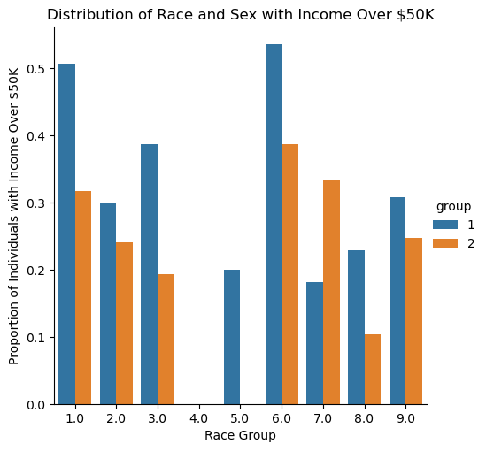
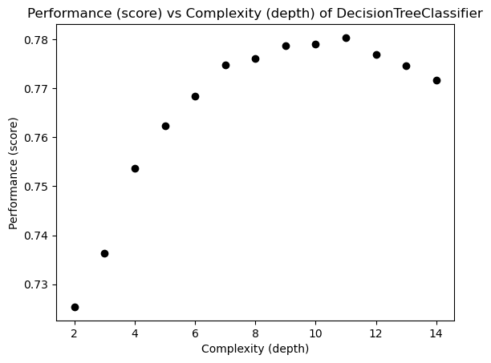
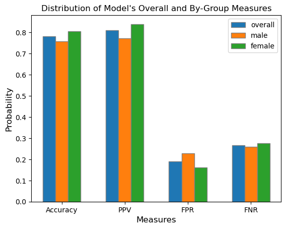
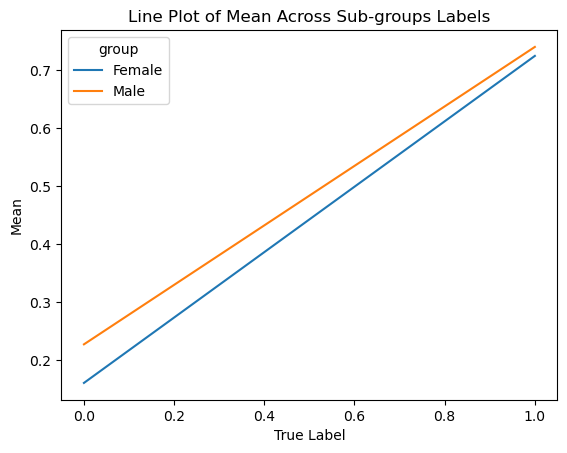
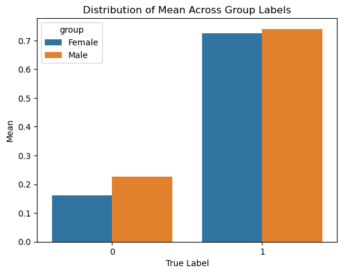

from folktables import ACSDataSource, ACSEmployment, BasicProblem, adult_filter
import numpy as np
STATE = "IL"
data_source = ACSDataSource(survey_year='2018',
horizon='1-Year',
survey='person')
acs_data = data_source.get_data(states=[STATE], download=True)Data Wrangling
For this analysis, I’ve chosen to pull the 2018 PUMS data from the state of Illinois.
# Reducing number of features
possible_features=['AGEP', 'COW', 'SCHL', 'MAR', 'OCCP', 'POBP', 'RELP', 'WKHP', 'RAC1P', 'SEX', 'PINCP']
acs_data[possible_features]| AGEP | COW | SCHL | MAR | OCCP | POBP | RELP | WKHP | RAC1P | SEX | PINCP | |
|---|---|---|---|---|---|---|---|---|---|---|---|
| 0 | 86 | NaN | 16.0 | 2 | NaN | 17 | 16 | NaN | 1 | 2 | 22200.0 |
| 1 | 30 | 1.0 | 18.0 | 5 | 4220.0 | 22 | 17 | 99.0 | 1 | 2 | 15000.0 |
| 2 | 57 | NaN | 19.0 | 5 | NaN | 17 | 17 | NaN | 2 | 1 | 0.0 |
| 3 | 69 | 1.0 | 19.0 | 3 | 1551.0 | 20 | 16 | NaN | 1 | 1 | 21600.0 |
| 4 | 18 | 3.0 | 18.0 | 5 | 2350.0 | 6 | 17 | NaN | 2 | 1 | 350.0 |
| ... | ... | ... | ... | ... | ... | ... | ... | ... | ... | ... | ... |
| 126451 | 72 | NaN | 16.0 | 1 | NaN | 17 | 1 | NaN | 1 | 1 | 68800.0 |
| 126452 | 43 | 1.0 | 21.0 | 1 | 710.0 | 210 | 0 | 40.0 | 6 | 1 | 89000.0 |
| 126453 | 39 | NaN | 21.0 | 1 | NaN | 210 | 1 | NaN | 6 | 2 | 0.0 |
| 126454 | 7 | NaN | 4.0 | 5 | NaN | 210 | 2 | NaN | 6 | 2 | NaN |
| 126455 | 5 | NaN | 1.0 | 5 | NaN | 210 | 2 | NaN | 6 | 1 | NaN |
126456 rows × 11 columns
features_to_use = [f for f in possible_features if f not in ["PINCP", "SEX"]]Below is a preprocessing step to filter our data in corresponding to the literature’s filters over the variables AGEP (age), PINCP (total income), WKHP (usual hours worked in the last 12 months), and PWGTP (individual’s weight).
# source code taken from folktables PUMS problem constructions
def adult_filter(data):
"""Mimic the filters in place for Adult data.
Adult documentation notes: Extraction was done by Barry Becker from
the 1994 Census database. A set of reasonably clean records was extracted
using the following conditions:
((AAGE>16) && (AGI>100) && (AFNLWGT>1)&& (HRSWK>0))
"""
df = data
df = df[df['AGEP'] > 16]
df = df[df['PINCP'] > 100]
df = df[df['WKHP'] > 0]
df = df[df['PWGTP'] >= 1]
return df# Transform our IncomeProblem to a BasicProblem to minimize features we would like to use
IncomeProblem = BasicProblem(
features=features_to_use,
target='PINCP',
target_transform=lambda x: 1*(x > 50000),
group='SEX',
preprocess= adult_filter,
postprocess=lambda x: np.nan_to_num(x, -1),
)
features, label, group = IncomeProblem.df_to_numpy(acs_data)# Split our data into test and train sets
from sklearn.model_selection import train_test_split
X_train, X_test, y_train, y_test, group_train, group_test = train_test_split(
features, label, group, test_size=0.2, random_state=0)Prediction Problem
My prediction problem will be predicting whether income is over $50k on the basis of demographics excluding sex and auditing for gender bias. I will be choosing to use a DecisionTree model for this analysis.
Basic Descriptives
# Convert our data into a dataframe for visualization
import pandas as pd
df = pd.DataFrame(X_train, columns = features_to_use)
df["group"] = group_train
df["label"] = y_train
df| AGEP | COW | SCHL | MAR | OCCP | POBP | RELP | WKHP | RAC1P | group | label | |
|---|---|---|---|---|---|---|---|---|---|---|---|
| 0 | 48.0 | 1.0 | 20.0 | 1.0 | 3515.0 | 17.0 | 1.0 | 40.0 | 1.0 | 2 | 0 |
| 1 | 49.0 | 1.0 | 21.0 | 1.0 | 850.0 | 17.0 | 1.0 | 40.0 | 1.0 | 1 | 1 |
| 2 | 44.0 | 1.0 | 1.0 | 1.0 | 4251.0 | 303.0 | 12.0 | 40.0 | 1.0 | 1 | 0 |
| 3 | 46.0 | 1.0 | 23.0 | 1.0 | 440.0 | 17.0 | 0.0 | 40.0 | 1.0 | 2 | 1 |
| 4 | 36.0 | 1.0 | 16.0 | 1.0 | 5610.0 | 17.0 | 1.0 | 60.0 | 1.0 | 1 | 0 |
| ... | ... | ... | ... | ... | ... | ... | ... | ... | ... | ... | ... |
| 53607 | 32.0 | 1.0 | 20.0 | 1.0 | 8740.0 | 17.0 | 0.0 | 48.0 | 1.0 | 1 | 0 |
| 53608 | 75.0 | 3.0 | 22.0 | 1.0 | 2320.0 | 17.0 | 0.0 | 7.0 | 1.0 | 1 | 0 |
| 53609 | 53.0 | 1.0 | 16.0 | 3.0 | 4220.0 | 17.0 | 10.0 | 6.0 | 1.0 | 2 | 0 |
| 53610 | 57.0 | 3.0 | 16.0 | 1.0 | 7000.0 | 17.0 | 1.0 | 50.0 | 1.0 | 1 | 0 |
| 53611 | 37.0 | 3.0 | 17.0 | 1.0 | 3945.0 | 17.0 | 0.0 | 40.0 | 1.0 | 1 | 1 |
53612 rows × 11 columns
In this dataset, there are 53612 total individuals present.
# Calculate the proportion of individuals who have an income of over $50k
df["label"].mean()0.39455718868909945Additionally, of the 53612 individuals in the data, only about \(39.5\)% of the individuas have an income of over $50k.
# Calculate the total individuals per group
group_prop = df.groupby("group", as_index = False).size()
group_prop.rename(columns = {"size" : "total"})| group | total | |
|---|---|---|
| 0 | 1 | 27724 |
| 1 | 2 | 25888 |
In this data, there are a total of 27724 males and 25888 females identifying folks.
group_label = df.groupby(["group"], as_index = False)["label"].mean()
group_label| group | label | |
|---|---|---|
| 0 | 1 | 0.478611 |
| 1 | 2 | 0.304543 |
In the male group, about \(47.9\)% of male individuals have an income of over 50k. Whereas in the female group, only about \(30.5\)% of female individuals have an income of over 50k.
Here, we can visualize the intersectional relationship between the proportion of individuals in the SEX and RAC1P groups who have an income of over $50k.
# Compute proportion of positive labels by race and sex
race_prop = df.groupby(["RAC1P", "group"], as_index = False)["label"].mean()# Visualize positive labels for both and race
import matplotlib as mpl
import matplotlib.pyplot as plt
import seaborn as sns
import seaborn.objects as so
sns.catplot(data=race_prop, x="RAC1P", y="label", hue="group", kind="bar")
# Add labels to title, x and y axis
plt.title("Distribution of Race and Sex with Income Over $50K")
plt.xlabel("Race Group")
plt.ylabel("Proportion of Individuals with Income Over $50K")
plt.show()
Shown above is a visualization of the different racial groups studied and their proportion of individuals who have an income of over $50k grouped by sex in Illinois.
One major observation from the plot is that the male sex has a larger proportion of individuals who have an income of over 50k than the female sex for all race groups with the exceptions to race groups 4 and 7 — Alaska Natives alone and Native Hawaiian and Other Pacific Islanders, respectively. Alaska Natives alone are also outliers in this plot as both sex groups show zero proportion of all individuals who have an income of over 50k in Illinois; similarly, females in the race group 5 (American Indian and Alaska Native tribes specified, or American Indian or Alaska Native, not specified and no other races) show zero proportion of all individuals who have an income of over 50k.
All RAC1P groups and other variables used in this analysis are described in the Appendix here.
Training My Model
Tuning Complexity of DecisionTree
Now that we’ve explored our data, we can train a machine learning model to predict the individuals living in Illinos who have an income of over $50k. Using the DecisionTree model, I can tune the depth using a cross-validation of 10-fold to choose a tree that maximizes the accuracy.
For each level complexity of our tree, we can assess its performance and verify which depth we should use for our model.
# From Classifier Lecture
from sklearn.tree import DecisionTreeClassifier, plot_tree
from sklearn.model_selection import cross_val_score
np.random.seed(12345)
fig, ax = plt.subplots(1)
# Plotting each of the complexity and its performance
for d in range(2, 15):
T = DecisionTreeClassifier(max_depth = d)
m = cross_val_score(T, X_train, y_train, cv = 10).mean()
ax.scatter(d, m, color = "black")
labs = ax.set(xlabel = "Complexity (depth)",
ylabel = "Performance (score)",
title = "Performance (score) vs Complexity (depth) of DecisionTreeClassifier")
From the plot, it is observed that a complexity of roughly 11 is the best for the data set which maximizes the performance of the DecisionTreeClassifier.
from sklearn.pipeline import make_pipeline
from sklearn.preprocessing import StandardScalerWe can now train our model and fit it over the testing set:
model = make_pipeline(StandardScaler(), DecisionTreeClassifier(max_depth = 11))
model.fit(X_train, y_train)Pipeline(steps=[('standardscaler', StandardScaler()),
('decisiontreeclassifier',
DecisionTreeClassifier(max_depth=11))])In a Jupyter environment, please rerun this cell to show the HTML representation or trust the notebook. On GitHub, the HTML representation is unable to render, please try loading this page with nbviewer.org.
Pipeline(steps=[('standardscaler', StandardScaler()),
('decisiontreeclassifier',
DecisionTreeClassifier(max_depth=11))])StandardScaler()
DecisionTreeClassifier(max_depth=11)
Auditing My Model
Now that we’ve trained and fit our model, we can perform an audit for gender bias over the test data with the SEX group and our PINCP label.
Overall Measures
Overall Accuracy
# Generate predictions based off model
y_hat = model.predict(X_test)The overall accuracy in predicting whether an individual has an income of over $50k is:
total_acc = (y_hat == y_test).mean()
total_acc0.7805132796180245Thus, our model achieved a \(78\)% accuracy in predicting whether a individual has an income of over $50k in Illinois.
Positive Predictive Value (PPV)
from sklearn.metrics import confusion_matrix
# Compute the confusion matrix for the model
cm = confusion_matrix(y_test, y_hat, normalize = "true")
# Extract PPV, FPR, and FNR
ppv = cm[0][0]
fpr = cm[0][1]
fnr = cm[1][0]
cmarray([[0.80999511, 0.19000489],
[0.26570881, 0.73429119]])The positive predictive value (PPV) can be calculated given the equation:
\[PPV = \frac{TP}{TP + FP}\]
Fortunately, our confusion matrix does this calculation for us! As shown in the top left corner of the confusion matrix of the overall PPV of our model is about \(81\)%.
Hence, of the total population of the dataset, about \(81\)% of individuals who reside in Illinois who does have an income of over $50k is true.
False Negative Rate (FNR) and False Positive Rate (FPR)
Similarly, we can extract the overall FNR and FPR of our model without having to compute its respective formulas using the confusion matrix. The FNR (shown in the bottom left corner) is about \(27\)%, and the FPR (shown in the top righ corner) is about \(19\)%.
Our model has a FNR of about \(27\)% which suggests that the model is classifying individuals with income of over $50k as having an income below the threshold nearly a third of the time.
Furthermore, our model has a FPR of about \(19\)% which suggests that the model is classifying individuals with income below $50k as having an income above the threshold about 19% of the time.
Now that we’ve audited our overall model, we can check if similar measures are observed for both male and female groups.
By-Group Measures
We can further our audit analysis by checking the previous measures for each group male and female who makes an income of over $50k.
Male Individuals
Here is the confusion matrix for male individuals in Illinois who make an income of over $50k:
mcm = confusion_matrix(y_test[group_test == 1], y_hat[group_test == 1], normalize = "true")
# Extract PPV, FPR, and FNR
mppv = mcm[0][0]
mfpr = mcm[0][1]
mfnr = mcm[1][0]
mcmarray([[0.77290287, 0.22709713],
[0.25985222, 0.74014778]])Male Accuracy
male_acc = (y_hat == y_test)[group_test == 1].mean()
male_acc0.7574214202561118Our model correctly predicts whether a male individual in Illinois has an income of over $50k about 76% of the time.
Positive Predictive Value (PPV)
The PPV of my model for male individuals is about 77% which suggests that for this population, our model correctly classifies male individuals in Illinois who does have an income of over $50k (true positives) 77% of the time.
False Negative Rate (FNR) and False Positive Rate (FPR)
The FNR and FPR of my model for male individuals is about \(26\)% and \(23\)%, respectively.
Hence, our model does not classify the true positives (male individuals who have an income of over $50k) 26% of the time; in other words, 26% of male individuals who have an income above the 50k threshold are classified as having an income below the threshold.
Lastly, given the FPR of nearly 23%, our model incorrectly classifies male individuals who have an income below $50k as true positives nearly 23% of the time.
Female Individuals
Now, let’s check the probability measures for female individuals. Shown below is the confusion matrix for female individuals who make an income of over $50k:
fcm = confusion_matrix(y_test[group_test == 2], y_hat[group_test == 2], normalize = "true")
# Extract PPV, FPR, and FNR
fppv = fcm[0][0]
ffpr = fcm[0][1]
ffnr = fcm[1][0]
fcmarray([[0.83947368, 0.16052632],
[0.27535497, 0.72464503]])Female Accuracy
The accuracy for predicting whether a female individual in Illinois has an income of over $50k is:
female_acc = (y_hat == y_test)[group_test == 2].mean()
female_acc0.8048071034905082Our model correctly predicts whether a female individual has an income of over $50k about 80% of the time.
Positive Predictive Value (PPV)
Observing the confusion matrix for the female group, we can see that the PPV of our model is about \(84\)%.
Hence, our model classifies the true positives, female individuals who does have an income of over $50k, as true nearly 84% of the time.
False Negative Rate (FNR) and False Positive Rate (FPR)
Our model displays the FNR and FPR for female individuals to be about 27% and 16%, respectively.
Hence, our model does not classify the true positives (female individuals who have an income of over $50k) 27% of the time; in other words, 27% of female individuals who have an income above the 50k threshold are classified as having an income below the threshold.
Lastly, given the FPR of about 16%, our model incorrectly classifies female individuals who have an income below $50k as true positives about 16% of the time.
Comparison
After auditing for both groups, we observe that both male and female groups have a similar FNR which suggests that the model is incorrectly missing a similar proportion of individuals in Illinois who have an income above $50k (but slightly higher for female individuals).
However, the FPR for the female group is lower than the male group. Thus, our model is generating fewer false positives for female individuals than male individuals; in other words, for female individuals who have an income below $50k, our model will classify them to belong in the negative class (individuals who have an income below 50k) about 84% of the time — while male individuals are only classified to belong in the negative class about 77% of the time.
Shown below is a visualization of the model’s overall measures and of each subgroup’s.
bar_width = 0.2
total = [total_acc, ppv, fpr, fnr]
male = [male_acc, mppv, mfpr, mfnr]
female = [female_acc, fppv, ffpr, ffnr]
# Set position of bar on X axis
br1 = np.arange(len(total))
br2 = [x + bar_width for x in br1]
br3 = [x + bar_width for x in br2]
# Make the plot
plt.bar(br1, total, width = bar_width,
edgecolor ='grey', label ='overall')
plt.bar(br2, male, width = bar_width,
edgecolor ='grey', label ='male')
plt.bar(br3, female, width = bar_width,
edgecolor ='grey', label ='female')
plt.title("Distribution of Model's Overall and By-Group Measures")
# Adding Xticks
plt.xlabel('Measures', fontsize = 12)
plt.ylabel('Probability', fontsize = 12)
plt.xticks([r + 0.2 for r in range(len(total))],
['Accuracy', 'PPV', 'FPR', 'FNR'])
legend = plt.legend()
plt.show()
Bias Measures
Calibration
Now, we can assess whether our model is reasonably calibrated by grouping by the average of both group and the true_label over the predicted_label. For this analysis, a calibrated model means that the fraction of individuals who have an income of over $50k is the same across both the male and female groups.
To do this, I first created a new data frame containing my group (SEX), true_label (y_test), and my predicted labels (y_hat). Then, I mutated the “group” column to Male (1) and Female (2) for visual readability.
# Create a dataframe containing the true and predicted labels and groups
calib_features = ["group", "true_label", "predicted_label"]
calib_df = pd.DataFrame({"group": group_test, "true_label": y_test, "predicted_label": y_hat}, columns = calib_features)
# Mutate df group values for readability using .replace()
group_test = calib_df["group"].replace([1, 2], ["Male", "Female"])
calib_df = pd.DataFrame({"group": group_test, "true_label": y_test, "predicted_label": y_hat}, columns = calib_features)
calib_df.head()| group | true_label | predicted_label | |
|---|---|---|---|
| 0 | Female | 0 | 0 |
| 1 | Male | 0 | 1 |
| 2 | Male | 0 | 0 |
| 3 | Male | 0 | 1 |
| 4 | Female | 1 | 1 |
After creating the new dataframe, I generated two visualizations: a line plot and bar plot of the mean across the groups’ predicted labels.
# Perform calibration test using .groupby() method
means = calib_df.groupby(["group", "true_label"])["predicted_label"].mean().reset_index(name = "mean")
# Visualizations of
g = sns.lineplot(data = means, x = "true_label", y = "mean", hue = "group")
plt.title("Line Plot of Mean Across Sub-groups Labels")
plt.xlabel("True Label")
plt.ylabel("Mean")
plt.show()
p = sns.barplot(data = means, x = "true_label", y = "mean", hue = "group")
plt.title("Distribution of Mean Across Group Labels")
plt.xlabel("True Label")
plt.ylabel("Mean")
plt.show()
From the perspective of calibration, the model might suggest that it is biased in the direction of the Male group. Out of those who were predicted to have an income of over $50k, slightly more male individuals were predicted to have an income over the income threshold in comparison to Female individuals.
Additionally, the line plot shows that across the ranges of true labels, male individuals maintain a higher statistical mean and proportion who are predicted to make an income of over $50k than female individuals. Thus, both plots can argue that the model is biased in the direction of the male group.
However, since the rates for both groups are sufficiently close, it may also be correct to suggest that the model appears well-calibrated.
Error Rate Balance
In her literature, Chouldechova defines error rate balance to be the case where both groups’ false positve and false negative rates are equal. If that requirement is met, then the model satisfies error rate balance.
From the previous audit of each group’s measures, we found that the FNR and FPR of the male and female groups are:
# Male rates
mfpr, mfnr(0.2270971302428256, 0.25985221674876846)# Female rates
ffpr, ffnr(0.16052631578947368, 0.2753549695740365)Observing that our model did not generate equal FNR and FPR for the male and female groups, our model does not satisfy error rate balance.
Statistical Parity
Chouldechova defines stastical parity, or predictive parity, to be the case where the PPV of both groups are equal. If that requirement is met, then the model satisfies statistical parity.
# Male and female PPV
mppv, fppv(0.7729028697571744, 0.8394736842105263)Given the PPV measures calculated before, it is observed that the model did not generate equal PPV for both groups as the female group had a higher PPV than the male group. Thus, our model does not satisfy statistical parity.
Concluding Discussion
After my analysis, I found that most often, male individuals, could stand to benefit from a system that is able to predict whether an individual’s income is over $50k. However, even while male, there are intersectional differences as we include race; thus, there are benefits to being in a certain racial group (such as White and Asian), and those benefits vary (for the positive and negative) dependent on which group an individual belongs to. Financial institutions such as banks and marketing firms may buy my model for commercial use because they can easily target certain consumers who reach the income threshold and are more willing (due to financial expectation) to buy their products. Governmental programs (e.g. food stamps) may also want to buy this model to determine who gets to reap the benefits of governmental assistance.
Based on my bias audit, the impact of deploying my model for large-scale prediction in commercial or governmental settings is that more male individuals will be classified as having an income of over $50k than female individuals. As a result, male individuals could have better matching rates from commercial or governmental programs than female individuals due to their expected financial status.
Based on my bias audit, my model displays a form of allocative bias with how opportunities that arise from governmental programs, or resources such as loans and insurance, are allocated in different proportions across SEX groups. Additionally, since the FPR differs across gender groups, the model might possess gender bias in predicting whether an individual in Illinois makes an income of over $50k.
Beyond bias, there is a concern with individuals who identify as non-binary; the lack of representation and/or data for non-binary folks may greatly affect their accessibility to governmental and commercial programs as only male and female groups are accounted for in the model. Of course, this is a concern regarding the improvement of the PUMS data collection to diversify the gender selection for respondents. Lastly, it might be interesting to audit our model for racial bias instead of gender and observe if racial biases are also present in our model.